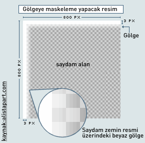

Resimlere gölge vermek bir çok tasarımcının kullandığı derinlik hissi
veren güzel bir efekttir. Bir çok insan bu efekti vermek için resim
düzenleme programlarını kullanmaktadır. Resimlere CSS ile de gölge
verebiliriz. Bu makalede CSS ile nesnelere(resim ve kutulara) gölge
verme yöntemlerini göreceğiz.
CSS ile gölge vermenin avantajı; resimlerimize herhangi bir ekstra
program kullanmadan gölge verebilmemizdir. Böylece sayfamıza her
eklediğimiz resim için resim düzenleme programını açıp gölge eklemek
zorunda kalmayacağız.
CSS ile Basit Şekilde Gölge Vermek
En basit css ile gölge verme yöntemi Dunstan Orchard'in yaptığı
yöntemdir. Bu yöntemde; resmi kapsayan katmana geniş gölge resmi; zemin
resmi olarak tanımlanarak uygulanır. Eksi margin değeri ile gölge resmi
ortaya çıkarılır.
Bu yöntemi uygulamak için ilk olarak 800x800 piksel genişliğinde bir
gölge resmi oluşturmalıyız. Bu resmi zemin resmi olarak kapsayıcı
katmana atayalım. Sonra resmi yukarı ve sola doğru 5 piksel mesafe
verelim.
Yukarıdaki kodda görüldüğü gibi bir resim ve onu kapsayan bir katmanımız
var. Kapsayıcı katmana(.resimKutu) gölge zemin resmini atayacağız.
Burada şöyle bir sorunumuz olacaktır ki katman bir blok-level bir
element olduğu için gölge zemin resmi tüm blok boyunca uygulanacaktır.
Bu durumu engellemek için sabit bir genişlik tanımlamamız gerekir, ancak
bu yöntemin kullanılabilirliğini azaltacaktır. Daha kullanılabilir
kodlama için float ataması yapacağız bu Mac IE 5x versiyonlarda sorun
çıkarır bunu engellemek için bu kodu Mac IE5x den gizleyeceğiz. CSS
kodu:
Kodlama IE5x versiyonlarda biraz sorunlu görünse de genelde
uygulanabilir bir metottur. Bu metot uygulanabilirliğinin kolay olması
sebebiyle tercih edilebilir.
www.clagnut.com'da yayınlandığı için bu isim verilmiştir. Bu metot
bir önceki ile benzerlik taşır. Bu metottaki fark negatif margin vermek
yerine göreceli(realtive) konumlandırma kullanmaktır.
Bundan önceki gölgeleme metotları basit metotlardı. Şimdi anlatacağımız
metot ise gerçeğe daha yakın gölge elde etmek için kullanılır.
Bu metod PNG ile oluşturulan saydam kenarlı bir gölge resmi ile
yapılmaktadır. Ancak kodlamada şöyle bir sorun varki IE7'den önce saydam
PNG'leri yorumlamıyor. Bunun içinde bu yöntemde IE'nin PNG desteklemeyen
versiyonları için saydam gif resmi oluşturulacaktır.(Ayrıca png fix
koduda uygulanacaktır)
Aşağıdaki gibi bir maske PNG dosyası oluşturalım. IE'nin eski
versiyonları için .gif oluşturalım.

<divclass="resimKapsulu"><div><img
src="images/koy_01.jpg" width="250" height="165" alt="Vizara Köyü –
Sürmene" />
Bu metodu uygulamak için
resimKapsulu katmanına alt sağa
dayalı bir gölge zemin resmi ekleyelim.
Bu kapsayıcı katmanın içindeki katmanın üst sağına üstte oluşturduğumuz
maske resmini ekleyelim. Bu resim gölge resminin üzerine binecektir ve
ortaya çok güzel bir gölge efekti çıkacaktır. İçteki katmana gölgenin
ortaya çıkması için padding uygulayalım. Ayrıca gerçek gölge efektini
yakalamak için png zemin resmini ekleyelim.
Son gölge verme metodu yuvarlak kenarlı kutuları oluşturduğumuz metoda
benzer bir metottur. Bu metotta içiçe girmiş üç katman kullanırız soğan
gibi ondan zaten(onion skin) diyorlar. En alttaki katmana gölge zemin
resmi, bir üstteki katmanın sol alt kısmına gölge kenarı, en üstteki
katmanın sağ üst kısmına gölge kenarı vererek yapılır.
Sonra oluşturduğumuz iki adet gölge resminin bir tanesini üst sağ
tarafa, diğerini alt sol tarafa zemin resmi olarak veriyoruz. Ayrıca tam
resme göre gölge vermek için aşağıdaki gibi kodlama yapmalıyız:
Bu metot kolay uygulanabilirlik bakımından avantajlıdır. Ancak fazladan
iki adet katman kullanılması bakımından pek anlamlı kod
yazımına(semantik) uygun değildir. Ama bir çok web tarayıcısında
sorunsuz çalışması bir artısıdır. Bu metot CSS3 ile birlikte daha basit
hala gelecektir. Çünkü CSS3 bize bir nesneye birden fazla zemin resmi
tanımlamamıza olanak sağlıyor. Ama bunu için beklemek zorundayız.

Yorumlar !